[1] "((A,B),X);"¿árbol filogenético?
Diagrama que muestra la relación evolutiva/similitud entre especies (o taxones)
Uno de los formatos más utilizados para representar filogenias son el Newick(.tree)
El formato Newick es una notación para representar relaciones evolutivas utilizando paréntesis y comas.
A y B se parecen más entre sí que a X
Para trabajar con esta notación, podemos usar ape (Analysis of Phylogenetics and Evolution):
El formato Newick es anidado:
Los lobos, coyotes y zorros pertenecen a Canidae; los lobos y coyotes (género Canis) están más estrechamente relacionados
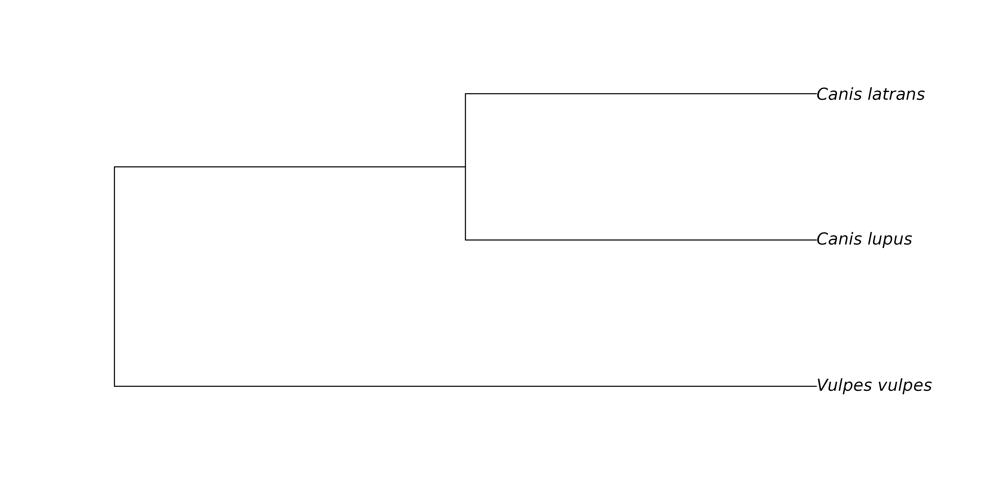Si agregamos murciélagos, todos pertenecen a los mamíferos:
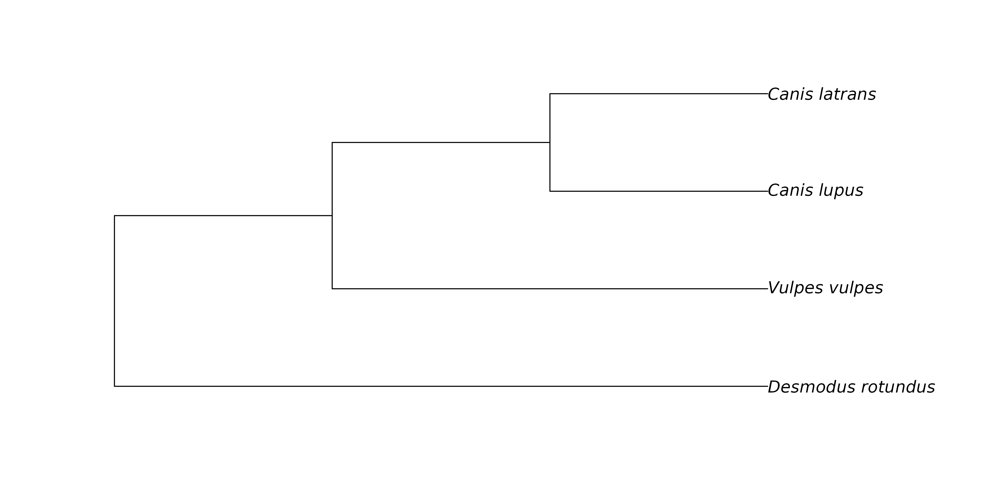Si quisieramos agregar cuervos y zanates. ¿Éstos dónde irían?
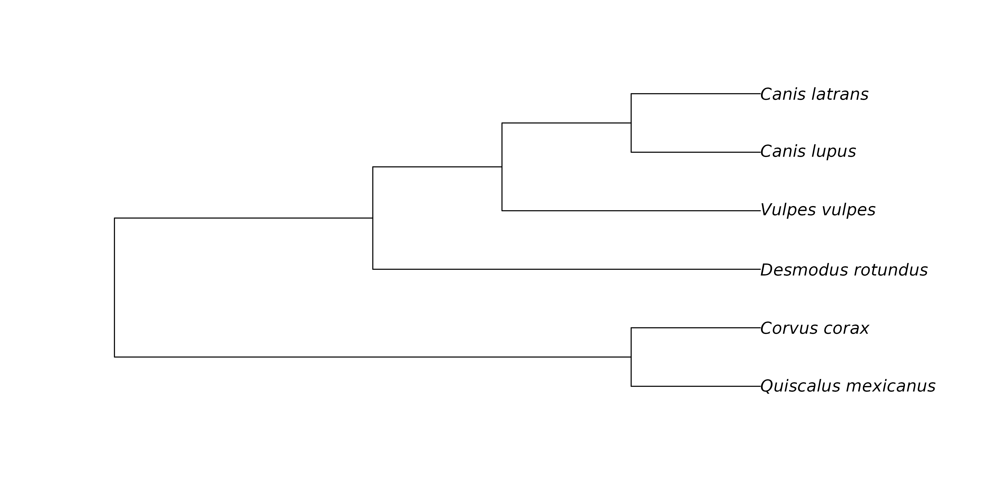Agregando una planta, los mamíferos y las aves se anidan
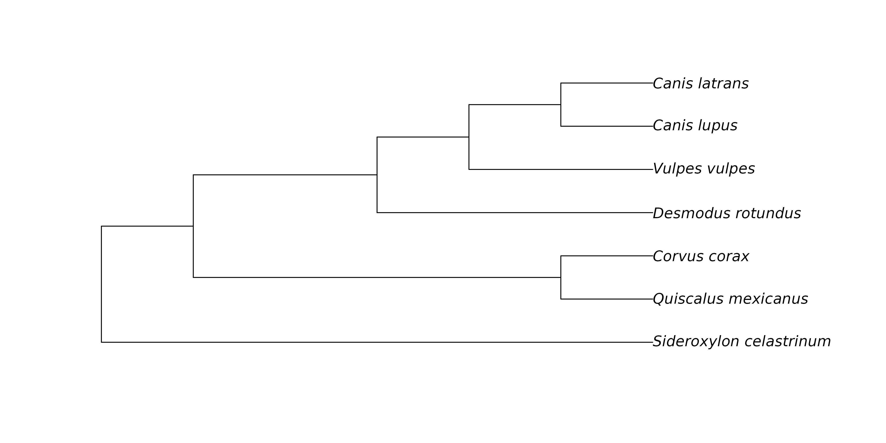ggtreeggtree nos permite graficar, personalizar, anotar árboles filogenéticos usando la gramática de gráficos
Phylogenetic tree with 100 tips and 99 internal nodes.
Tip labels:
Icterus_melanopsis, Icterus_northropi, Icterus_laudabilis, Icterus_dominicensis, Icterus_cayanensis, Icterus_pyrrhopterus, ...
Node labels:
761, 762, 763, 764, 765, 766, ...
Rooted; includes branch lengths.Visualizando el objeto con ape
Con ggtree
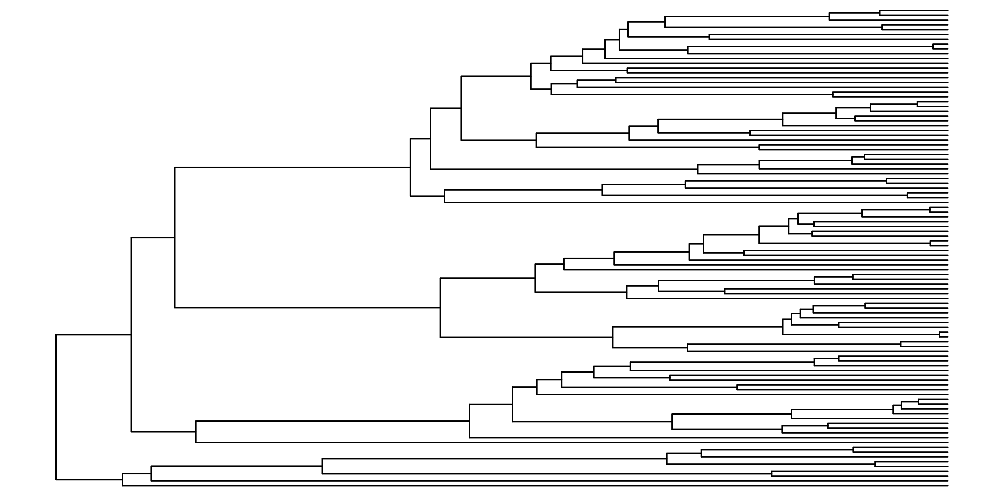Asignamos la figura al objeto
p1
El argumento/función layout cambia la disposición del árbol:
Cambiar el color del fondo:
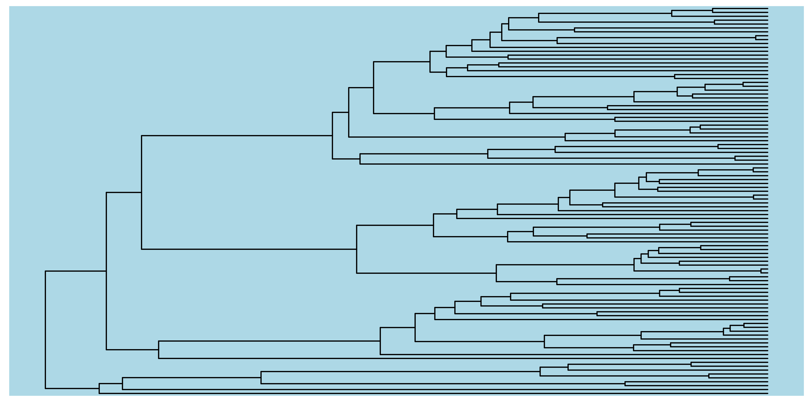Agregar las etiquetas de las puntas:
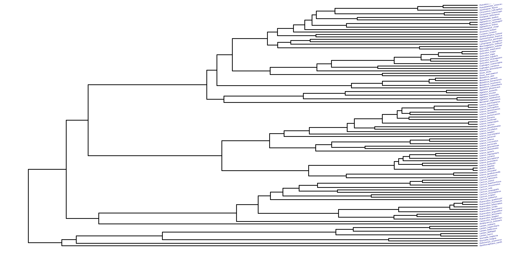Formas en cada punta
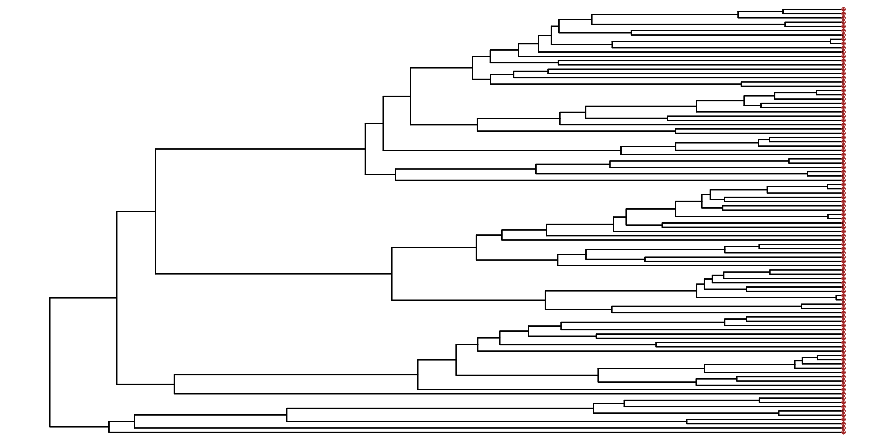Rotular nodos:
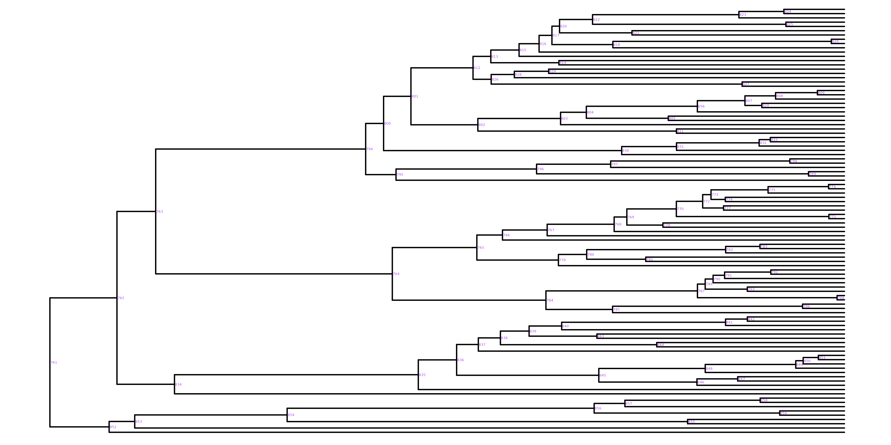Puntos en cada nodo:
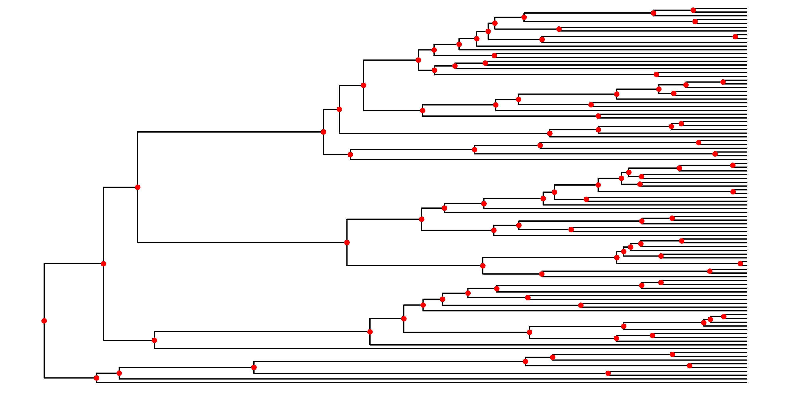A gregar una escala temporal a la filogenia, con el paquete deeptime
Combinando geoms
ej: destacar el género Quiscalus
# A tibble: 6 × 4
parent node branch.length label
<int> <int> <dbl> <chr>
1 146 41 1.82 Quiscalus_quiscula
2 148 42 0.851 Quiscalus_niger
3 149 43 0.335 Quiscalus_major
4 149 44 0.335 Quiscalus_mexicanus
5 150 45 1.02 Quiscalus_nicaraguensis
6 150 46 1.02 Quiscalus_lugubris Ancestro común más reciente (MRCA()) de las dos especies en el género con la longitud de rama más larga y más corta
# A tibble: 1 × 4
parent node branch.length label
<int> <int> <dbl> <chr>
1 144 146 1.37 806 Anotar el género Quiscalus en la filogenia utilizando geom_cladelab (nodo 146)
Destacar el géneroIcterus:
# A tibble: 31 × 4
parent node branch.length label
<int> <int> <dbl> <chr>
1 111 1 0.193 Icterus_melanopsis
2 111 2 0.193 Icterus_northropi
3 114 3 1.47 Icterus_laudabilis
4 114 4 1.47 Icterus_dominicensis
5 116 5 0.197 Icterus_cayanensis
6 116 6 0.197 Icterus_pyrrhopterus
7 115 7 0.943 Icterus_auricapillus
8 117 8 1.49 Icterus_bonana
9 117 9 1.49 Icterus_portoricensis
10 118 10 2.24 Icterus_prosthemelas
# ℹ 21 more rowsgeom_strip() para dibujar líneas entre dos puntas arbitrarias
geom_highlight para destacar clados sobre las mismas ramas:
highlight + rótulo
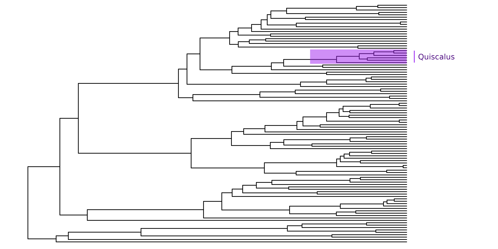siluetas desde phylopic o imagenes propias.
Es necesario cargar rsvg primero
Quiscalus y Agelaius tienen imagenes indexadas en phylopic
Encontrar los identificadores con phylopic_uid()
Tabla con los datos necesarios para anotar nuestra filogenia:
Cambiando los colores de las figuras siguiendo gramática de gráficos:
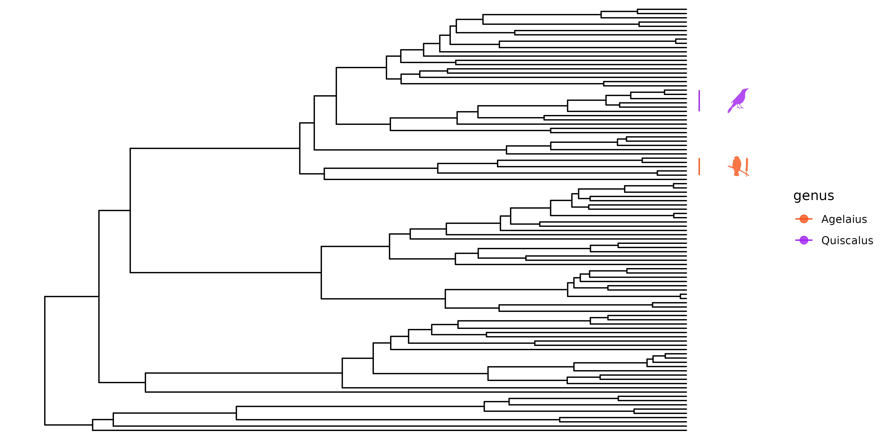Más geoms
pr<-p1+ geom_cladelab(data = dt,
mapping = aes(node = node, label = genus,
image = image, color = genus),
geom = "phylopic", offset = 0, offset.text=0.5)+
scale_color_manual(values=c("#f75419","purple"))+
geom_highlight(node=146,alpha=0.5,fill="purple",type = "rect")+
geom_highlight(node=136,alpha=0.5,fill="#f75419",type = "rect")
prEjemplo con múltiples anotaciones por Axel Arango:
Cargar los atributos, en este caso Hand Wing Index (HWI) y el hábito migratorio:
Unienr con la filogenia (es importante que las especies estén rotuladas como label)
names(hwi)<-c("label","hwi")
names(migrants)<-c("label","migratory")
hwimigrants<-hwi%>%
left_join(migrants,by="label")
datatree<-full_join(ictree,hwimigrants,by="label")
datatree'treedata' S4 object'.
...@ phylo:
Phylogenetic tree with 100 tips and 99 internal nodes.
Tip labels:
Icterus_melanopsis, Icterus_northropi, Icterus_laudabilis,
Icterus_dominicensis, Icterus_cayanensis, Icterus_pyrrhopterus, ...
Node labels:
761, 762, 763, 764, 765, 766, ...
Rooted; includes branch lengths.
with the following features available:
'', 'hwi', 'migratory'.
# The associated data tibble abstraction: 199 × 5
# The 'node', 'label' and 'isTip' are from the phylo tree.
node label isTip hwi migratory
<int> <chr> <lgl> <dbl> <chr>
1 1 Icterus_melanopsis TRUE 26.5 No-migrant
2 2 Icterus_northropi TRUE 21.0 No-migrant
3 3 Icterus_laudabilis TRUE 22.2 No-migrant
4 4 Icterus_dominicensis TRUE 26.5 No-migrant
5 5 Icterus_cayanensis TRUE 26.3 No-migrant
6 6 Icterus_pyrrhopterus TRUE 17.8 No-migrant
7 7 Icterus_auricapillus TRUE 17.3 No-migrant
8 8 Icterus_bonana TRUE 16.9 No-migrant
9 9 Icterus_portoricensis TRUE 22.3 No-migrant
10 10 Icterus_prosthemelas TRUE 24.1 No-migrant
# ℹ 189 more rowspodemos también personalizar esta escala:
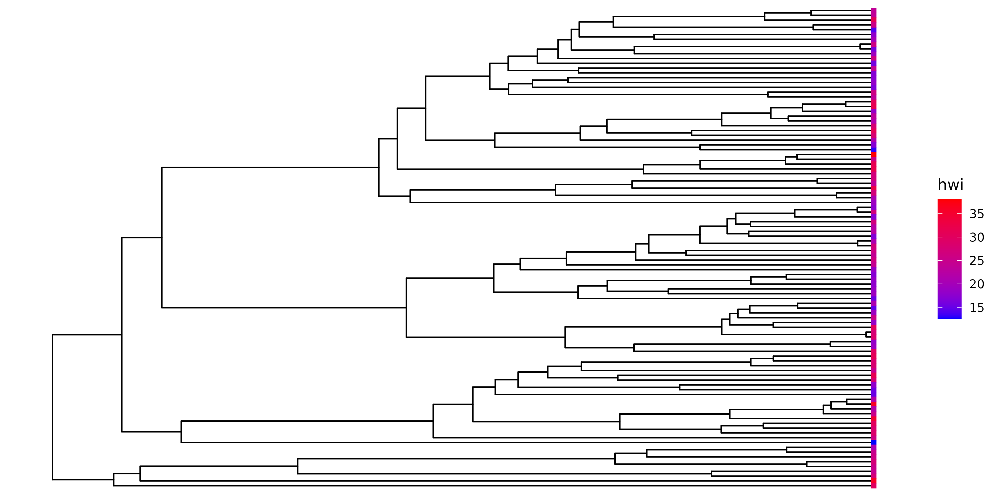px<- py%<+% migrants + geom_tippoint(aes(color=migratory),shape=15)+
scale_color_manual(values = c("#961d29","#1420a3"))+
scale_fill_manual(values = c("#961d29","#1420a3"))
px+ geom_facet(panel="HWI",data = hwi,geom=geom_col,mapping=aes(x=hwi,color=migratory,fill=migratory),orientation='y')+
theme_tree2()